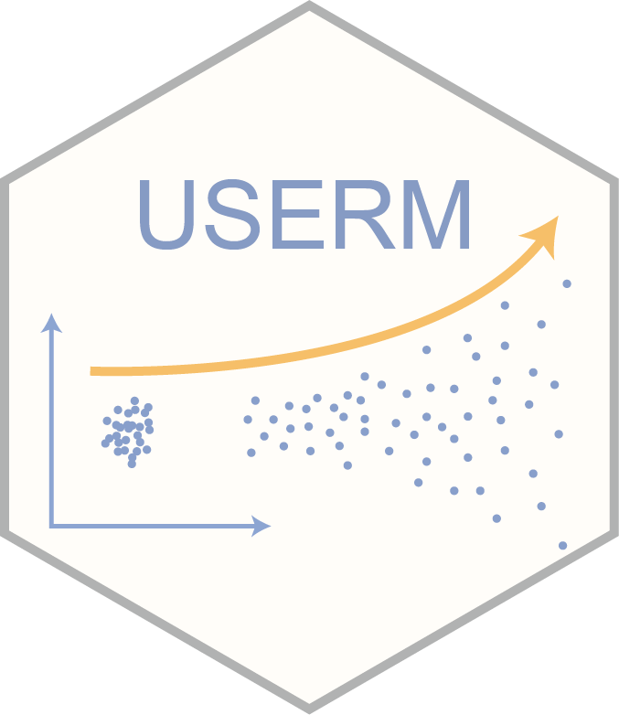

USERM 
Unmixing Spread Estimation based on Residual Model
🔍 Introduction
The USERM provides an out-of-box tool to apply the residual model approach [^1], which characterizes and predicts the spread of unmixed spectral flow cytometry data, which arises from instrumental noise or deviations between actual cellular emission and the average fluorescence signatures.
The USERM also supports computing various matrixes tools for panel design, including the Coef Matrix, the Hotspot Matrix, and the Similarity Matrix, and many others.
💻 Installation
You can install the development version of USERM from GitHub with:
devtools::install_github("xiangmingcai/USERM")🖊 Instruction
For basic use of the USERM: basic use instruction
For instruction about using custom single-color control FCS file: custom scc instruction
For instruction about using USERM to interpret observed spread: interpret spread instruction
⚙️ Contribute Single-cor control FCS files to the USERM
The capabililty of the USERM greatly rely on the built-in FCS. However, there are many fluorescence not included in the current version. Also, there are many other spectral flow cytometry instruments that are missing in the current USERM. The current built-in SCC are all human PBMC or beads. That means we are also short in SCC acquired from other tissues or species.
It would be of great help if you would contribute your SCC to the USERM package. We will acknowledge your contribution in the “Resource” column of the querySig() return list. If you are interested in contributing your SCC, please contact us directly via e-mail:
Dr. Juan J. Garcia Vallejo: jj.garciavallejo@amsterdamumc.nl
Xiangming Cai: x.cai@amsterdamumc.nl or xiangming_cai@126.com
🧮 Feedback
Any feedback is welcomed! You may post any issue on the Issue of the USERM repository.
📚 Citation
If you use this package in your research, please cite our paper and the package as:
Xiangming Cai, Sara Garcia-Garcia, Nick Rohrbacker, Michaela Gianniou, Juan J. Garcia Vallejo. Manuscript in preparation. (to be update)
Cai X (2025). _USERM: Unmixing Spread Estimation with Residual Model_. R package version
1.0.0, <https://github.com/xiangmingcai/USERM>.
@Manual{,
title = {USERM: Unmixing Spread Estimation with Residual Model},
author = {Xiangming Cai},
year = {2025},
note = {R package version 1.0.0},
url = {https://github.com/xiangmingcai/USERM},
}